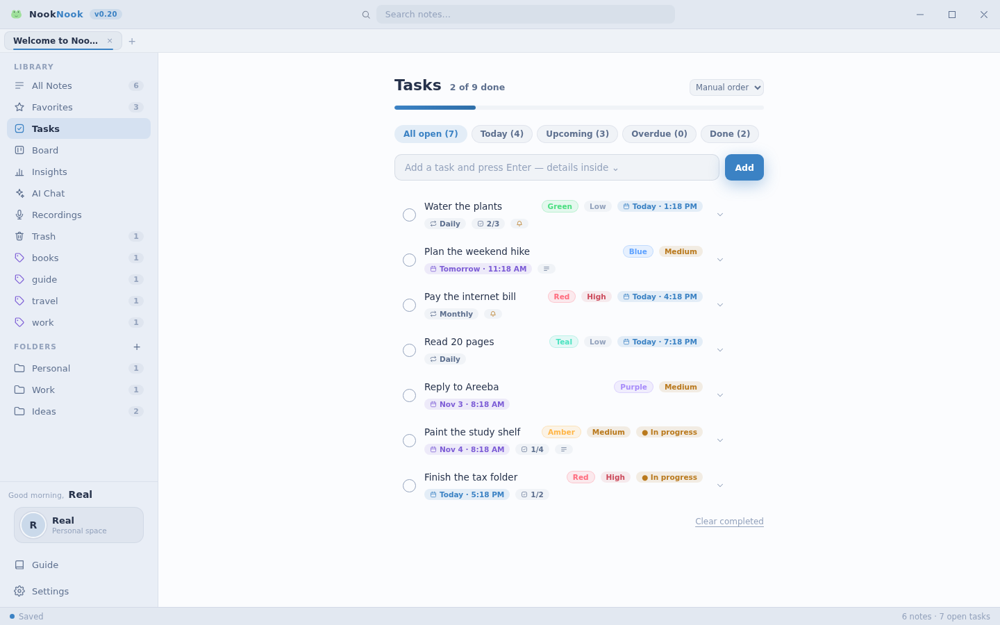

Rich markdown notes
Write in markdown, read it rendered. Live preview, note tabs, tags, pinning, favorites, folders and a trash that forgives you.
NookNook is your own little corner on the PC — markdown notes, tasks with reminders, a kanban board and an AI that answers to you. Everything lives in one tiny local file. No accounts, no cloud, no waiting.

Most note apps give you a textbox and call it a day. NookNook gives you the whole desk — notes, tasks, a board, a recorder and insights, all wired into one calm little app.
Write in markdown, read it rendered. Live preview, note tabs, tags, pinning, favorites, folders and a trash that forgives you.
Due dates, reminders that actually ring, repeats, subtasks with progress, priorities and a Today view.
Pointer-perfect dragging (yes, even on Windows), six label colors, card details with checklists, live progress and a quick filter.
Bring your own key. NookNook talks straight to your provider; the key never leaves this PC. It can even read the note you have open.
One-tap voice recording with live level bars, durations and a tidy archive of every session.
Words written, day streaks, a 14-day activity chart, top tags and board progress — computed locally from your own data.
Cozy Midnight to Matcha Latte — dark and light, each with its own accent and glow. Plus seven accent colors if you want it just so.
Ctrl+K jumps anywhere: any note, any theme, any action. Ctrl+1–5 hops between views. Zen mode strips the world away.
One-click backup to a single file, or export any note as a self-contained web page. Your words are never locked in.
No telemetry, no accounts, no analytics. The database sits in your user folder and stays there.
Soft taps, pops and chimes for every action, plus generative lofi that never repeats. Both optional, one toggle each.
Every picture below is the actual app, captured as-is. Click any screen to see it up close.




24 handcrafted themes ship in the box — dark, light and everything between. Tap a swatch; this preview uses the real colors from the app.
Cozy Midnight
Cloud notes rent you a desk in someone else's building. NookNook hands you the keys: the whole app and the whole database live on your PC, and every feature works with the Wi-Fi switched off.
| NookNook | Typical cloud notes | |
|---|---|---|
| Where data lives | Your PC, a local SQLite file | Their servers |
| Account needed | Never | Required |
| Works offline | Fully — every feature | Partly, if at all |
| Installer size | About 2 MB | Often 100 MB or more |
| AI key handling | Stays on this PC | Their pipeline |
| Getting data out | Backup file or HTML export, anytime | Whatever they allow |
Not a line of your writing touches a server. Not a keystroke gets counted. The quiet promise inside every NookNook build.
One database file in your user folder. Copy it, back it up, carry it on a USB stick — it is yours.
AI chat dials your provider directly. The API key sits in the local database and travels nowhere else.
No analytics, no crash reporters phoning home, no accounts. The app has no idea who you are — by design.
NookNook improves in small, steady drops — real releases, real dates, no vaporware.
Copy any note as Markdown, ==highlight== marker, insert today's date, collapsible note-list pane (Ctrl+Shift+B), editor font size cycling and a reopen-last-note setting that starts you where you left off.
Brand-new double-N app icon crisp from 16 px to 1024 px, public downloads with checksums, a full README and this website.
Nook became NookNook everywhere — installer, titlebar, splash, tray — with a two-tone logo and every note, task and key carried over untouched.
Ctrl+K runs actions, jumps to places and switches all 24 themes. New Insights view with streaks, a 14-day chart and top tags. Card details on the board.
Buttery pointer dragging, glass columns, live stats, six label colors, card modals with checklists, and a profile chip with your photo.
Realistic synthesized sound effects, generative ambient lofi composed live on your PC, a night-sky launch splash, and the AI chat fix that made it all click.
Dreamy onboarding, name personalization, AI chat v2, Zen mode, note templates, HTML export, 24 themes, accent colors, zero emoji UI, the Windows drag fix and a full icon refresh.
...and a fresh drop of improvements almost daily. The frog never sleeps.
25f634d8e731c4428cd9c655dfeec96b304fdbb87ed3465f70cf4f85a6df32ee
v0.20.0 setup · Windows 10 / 11, 64-bit · about 2 MB download · no admin rights needed · free, MIT licensed